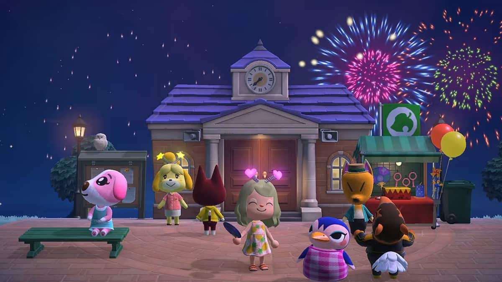

Año de publicación: 2020
Desarrollador: Nintendo
Calificación:10/10
Reseña: Es un juego fabuloso (si es que te gustan los juegos de simulación). Es pacífico y bonito, puedes craftear varias cosas y disfrutar de diferentes experiencias, sin tener la necesidad constante de sobrevivir como sucede en otros juegos como: Terraria o Stardew valley. Definitivamente es para solo relajarse y olvidarse de los problemas que la vida real tiene, por un tiempo.
